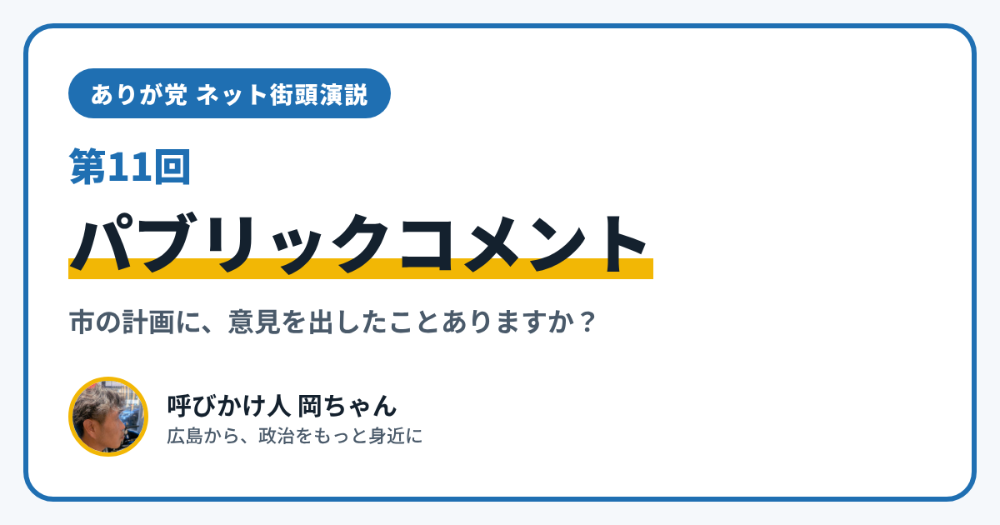

ありが党 ネット街頭演説 第11回｜市の計画に、あなたの意見を届けられる「パブリックコメント」

こんにちは、ありが党の呼びかけ人、岡ちゃんです。今日のネット街頭演説のテーマは「政治をもっと身近に」です。
「市の計画や決まりって、知らないうちに決まっている」と感じたこと、ありませんか？ でも実は、決まる前の「案」の段階で、だれでも意見を出せるしくみがあります。それが「パブリックコメント（意見公募）」です。
広島市の「パブリックコメント」って？
広島市では、大事な計画や条例をつくるとき、その案をホームページなどで公開して、市民から意見を集めています。
- 市内に住んでいるかどうかに関係なく、どなたでも意見を出せます（内容によっては、市内に住んでいることなどの条件がつく場合もあります）
- 意見を出せる期間は、おおむね1か月間です
- 出し方は、持っていく・郵便などで送る・ファクス・電子メールなど。名前と住所を書きますが、名前を書かずに出すこともできます
- いま募集している案は、広島市のホームページの「パブリックコメント(意見公募)一覧」で見られます
出した意見は、どうなるの？
集まった意見は、計画や条例ができあがるころに、市のホームページで公表されます。
- 寄せられた意見のあらまし
- その意見に対する、市長の考え方
- 意見をうけて案を直したときは、その内容
ひとりひとりに直接の返事はありませんが、「どんな意見があって、市がどう考えたか」は、だれでも読めます。国にも同じようなしくみがあり、「e-Gov（イーガブ）パブリック・コメント」というサイトで、いま意見を募集している案を見ることができます。
僕が思うこと
僕は、政治は選挙のときだけのものではなく、ふだんの暮らしの中で関われるものだと思っています。パブリックコメントは、そのための身近な入り口のひとつです。
ただ、案の文章はむずかしい言葉が多くて、読むだけで疲れてしまうこともあります。障がいのある人や、忙しい人も、もっと気軽に意見を出せるようにするには、どうしたらいいのか。みんなで考えたいです。
あなたは、市や国に伝えたいこと、ありますか？ InstagramのDM（@ayu19841002）や、ありが党のページから、あなたの暮らしの声を聞かせてください。
ありが党は、まだ僕ひとりから始めたばかりです。政治をもっと身近にしたいと思う方、一緒に考えてくれる仲間を探しています。InstagramのDM（@ayu19841002）で気軽に声をかけてください。